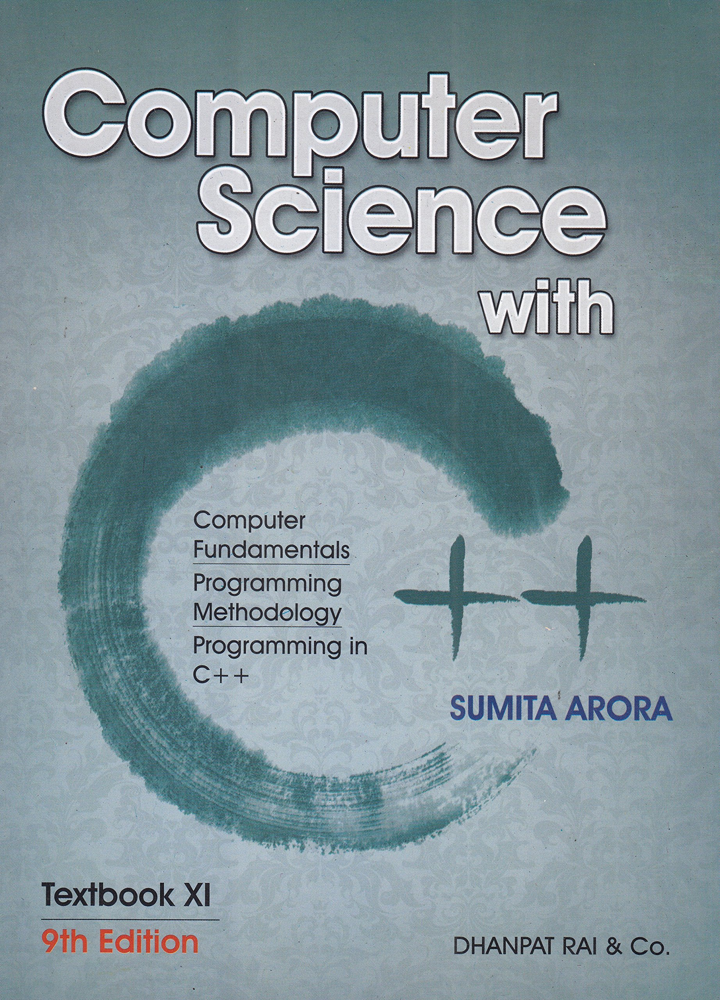

-:Library of Knowledge:-
C++ Programming :: The Ultimate Way to Learn The C++ Language

C++ Programming :: The Ultimate Way to Learn The Fundamentals of The C Language is the fastest way to get comfortable with C, one incredibly clear and easy
step at a time. This book gives a good start and complete introduction for C Programming for Beginner’s.This book is available to download in PDF format and also
available to buy book online or offline.To buy online you can follow the below link.
Author:-Harry H. Chaudhary
Published in :-June 2014
Operating System Concepts Essentials

Operating System Concepts Essentials comprises a subset of chapters of the ninth edition for professors who want a shorter text and do not cover all the topics
in the ninth edition. The new second edition of Essentials will be available as an ebook at a very attractive price for students.
Authors:-Avi Silberschatz, Greg Gagne, and Peter Baer Galvin
Published in:-27 November 2006
ChandraGupt Maurya

Chandragupta Maurya defeated the Nandas and established himself on the throne of Magadha in 321 B.C. It was a journey
fraught with dangerous challenges but his chance meeting with the wily Chanakya changed his destiny forever.
The clever Brahmin showed him how by the sheerbrilliance of his wit and wile he could help the young Mauryan prince
to rise from being an unknown warrior to one of the greatest emperors of India.
Author:-Subba Rao
Published in:-1 January 2011
Merchant of Venice

The Merchant of Venice is a 16th-century play written by William Shakespeare in which a merchant in Venice named
Antonio defaults on a large loan provided by a Jewish moneylender, Shylock.
It is believed to have been written between 1596 and 1599.
Author :-William Shakespeare
Publisher :-Maple Press
Published in:-1 September 2013
As You Like It

As You Like It
Rosalind and her cousin escape into the forest and find Orlando, Rosalind's love.
Disguised as a boy shepherd, Rosalind has Orlando woo her under the guise of "curing" him of his love for Rosalind.
Rosalind reveals she is a girl and marries Orlando during a group wedding at the end of the play.
Publisher :-Maple Press
Published in:-1 August 2012